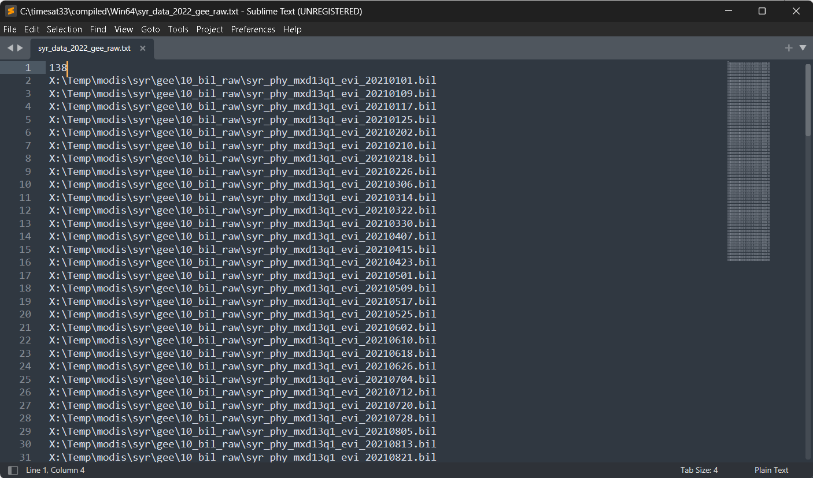
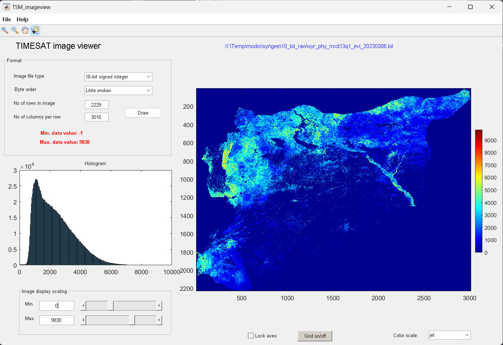
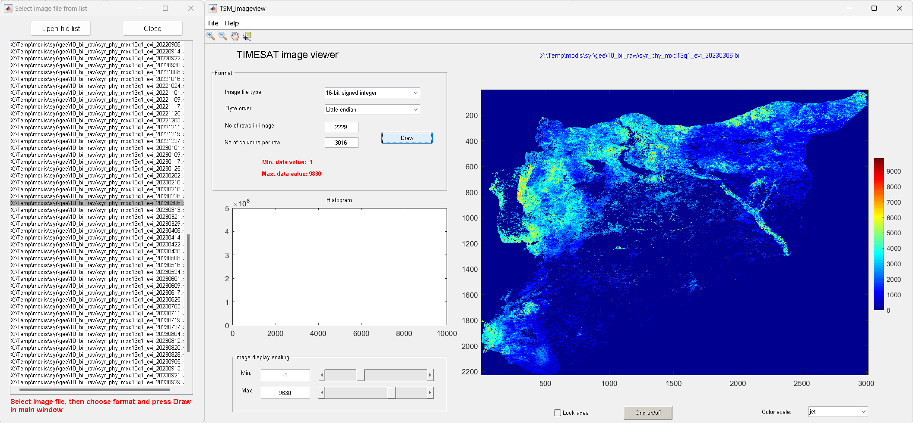
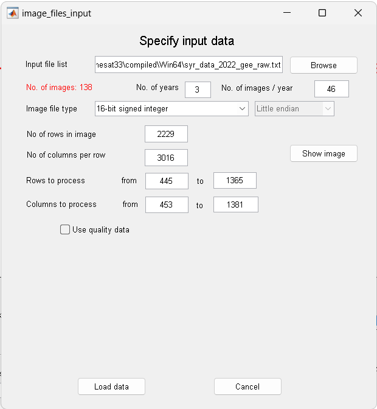
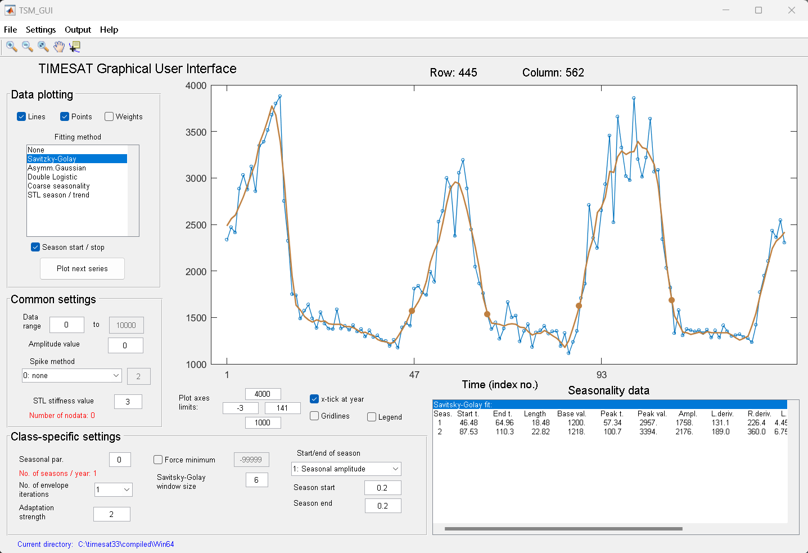
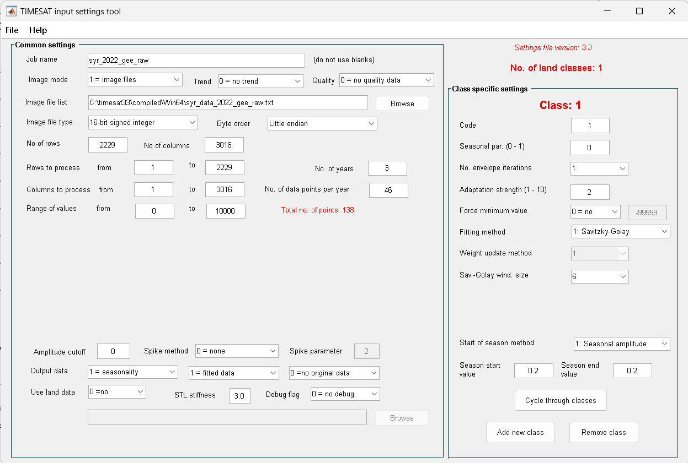
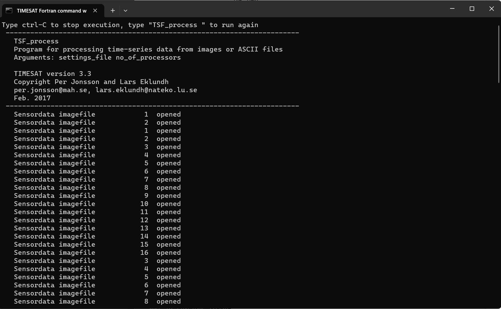
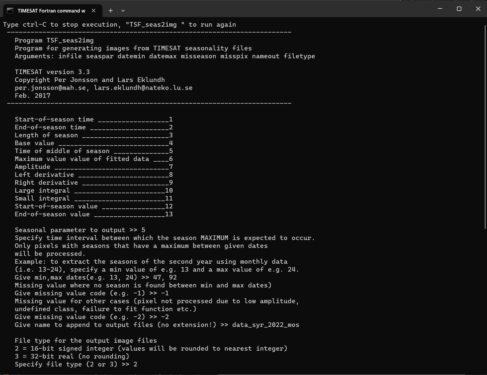
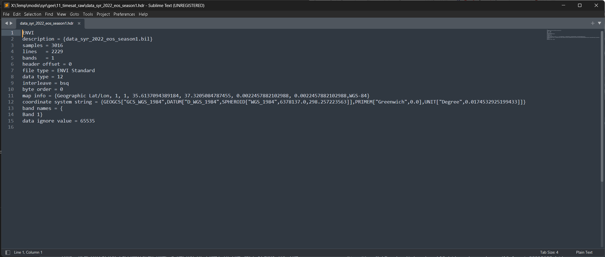

Seasonality Parameters Data Extraction#
A working example to detect seasonality parameters in Syria has been developed based on areas where the majority is a cropland. This approach requires a crop type mask and moderate resolution time series Vegetation Indices (VI). In this example, we use data from the MODIS.

Figure 1. Growing season detection on a cropland
State of planting and harvesting estimates are determined by importing Vegetation Indices (VI) data into TIMESAT – an open-source program to analyze time-series satellite sensor data. TIMESAT conducts pixel-by-pixel classification of satellite images to determine whether planting has started or not. This process is followed for all areas over multiple years to evaluate current planting vis-à-vis historical values from 2003 - 2023 (in this case with MODIS EVI data).

Figure 2. TIMESAT Parameters
The main seasonality parameters generated in TIMESAT are (a) beginning of season, (b) end of season, (c) length of season, (d) base value, (e) time of middle of season, (f) maximum value, (g) amplitude, (h) small integrated value, (h+i) large integrated value. The blue line in Figure 11 shows the raw EVI time series, while the red line shows the EVI values after applying a Savitsky-Golay smoothing algorithm. The phenological parameters detected describe key aspects of the timing of agricultural production and are closely related to the amount of available biomass.
This section will explain on how to prepare the Vegetation Indices (VI) as input for seasoanlity parameters data extraction.
This step-by-step guide was tested using Windows 11 running on Thinkpad T480 2019.
0. Working Directory#
For this tutorial, we are working on these folder X:/Temp/modis/syr/ directory. I have some folder inside this directory:
input01_tifPlace for the VI in.tifwhich already clipped with the Cropland.02_bilPlace to put the flat-binary files, result from GDAL conversion
Place to put downloaded VI data, and pre-process temporary files.
output01_raw_seasonality_metricsPlace for raw outputs seasonality files generated by TIMESAT02_tif_seasonality_metricsPlace for ready-to-used seasonality raster (.tif) files03_extract_datePlace for extract each seasonality date04_dbfPlace fordbffiles generated from Zonal Statistics Tools05_csvFinal output, statistics information per admin boundary
Feel free to use your own preferences for this setting/folder arrangements.
1. Software Requirement#
This whole process requires the support of several software.
1.1. TIMESAT#
To investigate the seasonality of satellite time-series data and their relationship with dynamic properties of vegetation, such as phenology and temporal development, we will use TIMESAT software - a software package for analysing time-series of satellite sensor data.
TIMESAT available for download via this link https://web.nateko.lu.se/timesat/timesat.asp?cat=4. You are required to register first before downloading the software.
Details about TIMESAT are available via the guideline, access the PDF through User manual for version 3.3
1.2. GDAL#
GDAL will use to translate the input to flat-binary files and the binary output files into GIS-ready format like a GeoTIFF files. You can install GDAL via conda.
2. Getting started with TIMESAT#
You can access TIMESAT from C:/timesat33/compiled/Win64, double-click TIMESAT.exe.
2.2. Preparing the data#
Images input
TIMESAT needs a sequence of vegetation index images covering a particular geographical area. Images should be converted to headerless binary format.
The number of images needs to be identical for each year, and each image should represent the same time interval (e.g. one day, 8-days, 10-days, 1 month etc.).
If an image representing a certain date is missing, an image denoting missing data should be added. This image should contain numerical values outside the range of the valid data.
TIMESAT uses flat binary files: identical to Idrisi
.rstor ENVI default BSQ formats, except that both ENVI and IDRISI require accompanying header files (.hdrand.rdcrespectively). It means that these data files can be used directly with TIMESAT, without the header files and without renaming. However, the user has to specify the organization of the data in each TIMESAT module.Other data formats (
HDF, Erdas Imagine.img, etc.) have to be converted to flat binary format , to IDRISI or to ENVI formats.Use
gdal_translateto convert GeoTIFF data to ENVI header less binary format:gdal_translate –of ENVI input.tif output.bil
List of input files
A list giving the total number of files and the full filename and path of each image needs to be present. An example is the file syr_data_2022_gee_raw.txt below:

Figure 4. List of data
The first row contains the number of data files (images), then comes one image name (includingpath) per row.
2.3. Image view#
Viewing images
Start TSM_imageview from the TIMESAT menu system. Under File, Open image file, browse to the folder
02_biland click on one of.bilfile.The files contain EVI data from the MODIS sensor. Change the choice under Image file type to 16-bit signed integer. Type
2229under No of rows in image, and3016under No of columns per row. Click the Draw button.
Figure 5. Viewing input data
To modify the Image display scaling you can increase the Minimum value to about 0 and decrease the Maximum value to about 10000 (enter these numbers in the edit boxes near the bottom left window corner, or use the sliders). Also try out the other options below the image area: Zoom on/off, Lock axes, Grid on/off, Data tip on/off, and Color scale.
Browsing through several files
If you have made sure that your file list correctly points to your vegetation index image data, you may use the function Open file list under File.
Click on the Open file list button and browse to folder the file
syr_data_2022_gee_raw.txt, select it.Click on one of the files, leave the window open and go over to the main window.
Choose the correct settings under Format and click the Draw button. You can then point to another file in the list and just click the Draw button again to view this image file.

Figure 6. Viewing list of input data
2.4. GUI#
Loading and processing ASCII time-series files
In this example we will load and process data stored in an ASCII time-series file.
Click on TSM_GUI in the TIMESAT menu system
Then select File, Open ASCII data file. Use the Browse button to open the file
syr_data_2022_gee_raw.txt.This file contains EVI data from MODIS for the time period 2021 – 2023. Note the preview of the file contents loaded into the window.
The first row shows that there are 3 years of data, 46 observations per year. Press Load data. The raw data from the first row of the file will load into the plotting area of TSM_GUI.

Figure 7. Specify input data
Next, select and unselect the different check boxes under Data plotting. Note the different fits achieved with
Gaussian,LogisticandSavitsky-Golay.The fits are affected by a number of options for detecting spikes, adapting to the upper envelope etc. These options can be controlled by the check boxes and buttons in the GUI either under Common settings or Class-specific settings.
There are more options, including the Spike method, Number of envelope iterations and Adaptation strength, that you might want to explore.

Figure 8. Data ploting
Setting parameters
We can also edit the exisiting parameters by accessing the input setting tool. Let say we have edit some parameters, and save the setting as file
syr_2022_gee_raw.set
Figure 9. Input setting tool
2.5. Process#
To start the program click on
TSF_processin the TIMESAT menu system.TIMESAT will ask for the input settings file. Select the file
syr_2022_gee_raw.set.A command window will then open and
TSF_processwill start running immediately.You can also start
TSF_processdirectly from a separate command window by typingTSF_process.
Figure 10. TSF_process
The program will process the data row by row. As you will notice, when having large data files the processing can take considerable time.
Data from the processing are saved to file. Check the contents of your current working directory and note that the two files
syr_2022_gee_raw_TS.tpa,syr_2022_gee_raw_fit.tts, and corresponding index files.ndxhave been created
2.6. Post processing#
The main TIMESAT processing is now done and we will see how data can be post-processed and viewed. TIMESAT provide a few basic programs for opening and processing the output files: TSM_fileinfo, TSM_printseasons, TSM_viewfits, TSF_fit2time, TSF_fit2img, TSF_seas2img, but for certain processing the user may be required to create tailored software.
As example, we only utilized TSF_seas2img to extract the seasonal parameters
TSF_seas2img: Creating an image from the seasonality data
This program generates an image from the seasonality parameters generated by Timesat.
Click on
TSF_seas2imgin TSM_menu.Now enter the seasonality file
syr_2022_gee_raw_TS.tpa. Then specify the seasonality parameter to map. Here we will map the Time of Middle Season,5.Then specify an interval that is wide enough to cover the second season. A suggestion is to specify this interval to
47to92since this will overlap the second year.Define codes for missing data due to no season found within the interval, and no pixel data at all found at that location. Finally, give a name of the output file, and specify its format.
Carefully note the format since it is important when viewing the file with TSM_imageview. Here we will give the name begin, and specify output in full precision,
16-bit.
Figure 11. Extract seasonality
Below are some outputs, if you run all the command:
TSM_fileinfo,TSM_printseasons,TSM_viewfits,TSF_fit2time,TSF_fit2img,TSF_seas2img. The last two generated byTSF_seas2img, we will use for further analysis.Output
Description
syr_2022_gee_raw_TS.tpaBinary file containing Timesat parameters.
syr_2022_gee_raw_fit.ttsBinary file containing fitted data values.
syr_2022_gee_raw_raw.ttsBinary file containing original time-series values.
timeseriesfile.txtASCII file containing fitted data values for selected pixels.
syr_2022_gee_raw_fit_47926-bit signed integer image file containing fitted data value for time step 47 to 92.
syr_2022_gee_raw_mos_nseasBinary image file containing no. of seasons.
syr_2022_gee_raw_mos_both_seasonsBinary image file containing both of seasons.
syr_2022_gee_raw_mos_season1Binary image file containing the selected seasonality parameter for the first season identified within the time interval specified.
syr_2022_gee_raw_mos_season2Binary image file containing the selected seasonality parameter for the second season identified within the time interval specified.
Output file#
All TIMESAT output files are header-less binary
We need to create a header for each files

Figure 11. Header file for flat-binary
Translate all the output files to GeoTIFF
We can use
gdal_translate, and here’s the scriptgdal_translate -of GTiff -co COMPRESS=LZW -co PREDICTOR=1 syr_2022_gee_raw_mos_season1 syr_2022_gee_raw_mos_season1.tif
After all the output data available in GeoTIFF format, feel free to use other software for further processing.